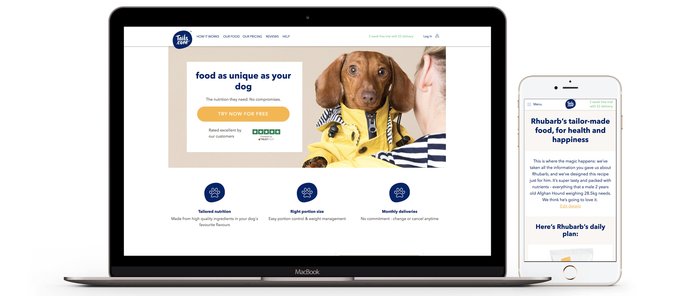

Tails.com are a tailor-made pet food company based in Richmond, London. I joined them 4 years into their journey and in their short time they had created a 100+ employee strong business based around their unique algorithm. This produces a bespoke kibble blend for your dog that is approved by vets. They were closing in on 100000+ active customers and growing rapidly.
I was recruited for a 3 month contract at Tails.com (extended to 4.5 months) to provide some much needed UX input on their already fully functional site. The amazing tech behind the scenes had to be implemented quickly and not enough thought had been given to the front end, the UI and the overall customer experience.
I joined the ‘Growth Squad’ who were responsible for growing the customer base by improving the experience of signing up to the service and retaining customers by making the logged in areas (account, food and portion management, delivery management) of the site more user-friendly.
This included:
Projects that I worked on
Oned of the perks of working with Tails was the co-workers that I had the privilege of working with and walking. All very good boys and girls.